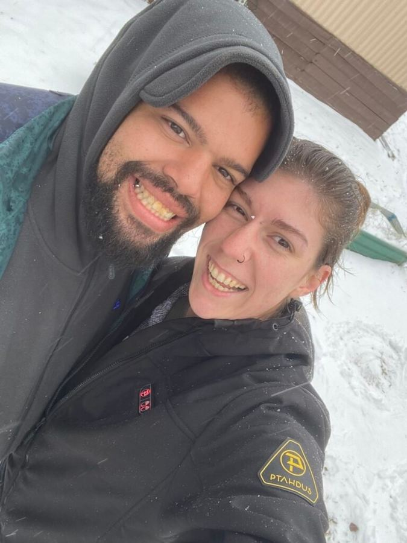
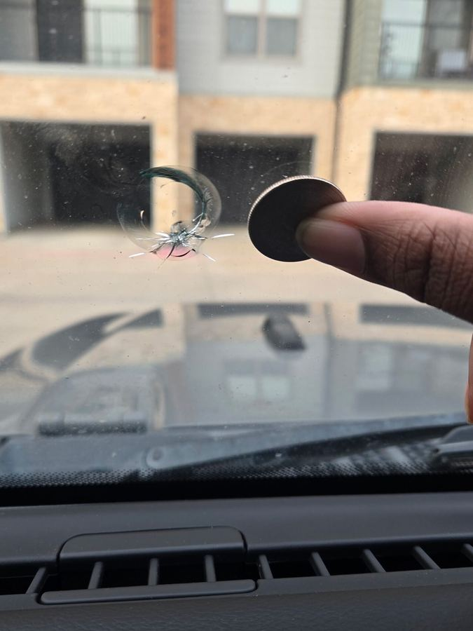
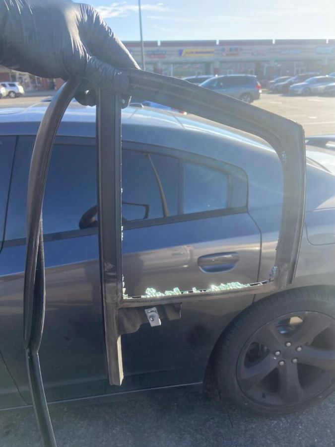

Servicing Dallas Metroplex auto glass needs since 20xx. Family owned and operated. Let’s get you back on the road.
Get your quote.
This tells us the exact glass your vehicle was built with, nothing more. Need more help? Click here!
Where to find your VIN
- Your insurance card or vehicle registration.
- The sticker in the driver’s door jamb, visible with the door open.
- The corner of the dash on the driver’s side, read through the windshield.
One more thing
Did we get that right?
So… where’s the damage?
The windshield: chip or crack?
Photos help the most, have any?
When do you need this fixed?
Here’s what we have
How would you like us to reach out?
Services
All cars, trucks and rigs.
- Rock chip repair A stone caught your windshield and left a chip. Caught early we can fill it, the damage stops spreading, and the original glass stays in the car. Quicker and cheaper than replacing it, so it is the first thing we look at.
- Windshield replacement When a crack is too long, too deep, or sits in your line of sight, the glass has to come out. Most cracks that spread began as a small chip near the edge, which is why we would rather see it early.
- ADAS recalibration Newer vehicles watch the road through a camera behind the mirror for lane keeping and automatic braking. Change the glass it looks through and it has to be re-aimed, or it reads the road wrong.
- Door glass Side windows are tempered, so they do not crack, they go all at once. We clear the fragments out of the door and off the seats, then fit new glass.
- Back glass Same story as a side window, usually after a break-in or a knock from behind. It often carries the defroster lines, and we match them.
- Power windows The glass is fine but the window will not move, or it has dropped down inside the door. That is normally the regulator or the motor. We check the whole assembly before replacing any of it.
- Specialty glass Vent glass, quarter glass, mirrors, moldings, and the small pieces nobody keeps on a shelf. If you are not sure what it is called, send us a photo.
Our guarantee
“We treat every ride like it’s our own, and every neighbor like family.”
- Lifetime warranty Every installation we carry out is covered for as long as you own the vehicle. If our work fails, we come back and put it right.
- We come to you Mobile across the Dallas Metroplex. We meet the car where it already is, at home or at work, so you are not arranging a ride to a shop on top of everything else.
- Insurance handled We deal with the claim and talk to the adjuster ourselves. You should not have to explain glass part numbers over the phone.
- No stress pricing Fair, honest and upfront. You have the number before we start, and it does not move once we do.
- Real people Black owned and family operated, with over ten years in the trade. The same hands on your vehicle every time.
- One visit, usually Most jobs are finished in a single appointment, and we tell you up front when yours is not one of them.
About us
Black owned and family operated.

At Quillin Auto Glass, we believe in more than just fixing glass. We believe in providing service with a smile. Whether you are in need of a windshield replacement or a quick chip repair, our team is here to make the process easy, fast and friendly.
As a family owned business, we treat each customer like they are one of our own. Your satisfaction is our top priority, and we are dedicated to ensuring your experience is smooth, stress free and enjoyable.


With over ten years of experience in the industry and a childlike passion for building up broken things and solving puzzles, Quillin Auto has been a dream well in the making. Reaching the community and caring for neighbors using the gifts on hand, Aria and Jacob Quillin have taken their core values and beliefs and poured them into this company. The Quillins aim to serve the community that they grew up in with integrity, honesty and transparency.
Let’s get you back on the road.
How this works
In plain terms.
- Do I have to use this? No. Call or text (214) 586-7650 and talk to a person. This only saves you the call.
- Why do you want my VIN? It tells us the exact glass your vehicle was built with. It describes the vehicle, not you, and we use it for nothing else.
- Does anything send before I say so? No. Nothing leaves your device until you press send, and you see all of it first.
- Is that car on screen mine? No, it is the same shape as yours so you have something to point at. The list of windows beside it is yours.
- Do I have to send photos? No, but one clear picture of the break tells us more than anything else you can give us.
- What if I cannot find my VIN? Pick your year, make and model from a list instead.
The whole thing, start to finish
- Tell us the vehicle, by VIN or from a list.
- Tap whichever glass is broken, or just describe it.
- Add a photo if you can.
- Say how soon you need it.
- Check it over and tell us how to reach you.
Contact
- Phone(214) 586-7650, calls and texts.
- EmailQuillinAutoGlass@gmail.com
- HoursMonday to Friday 8am to 6pm. Saturday 8am to noon. Sunday by appointment.
- WhereBased in Wylie, Texas. We come to you.
- PaymentAll major cards, cash, Zelle.